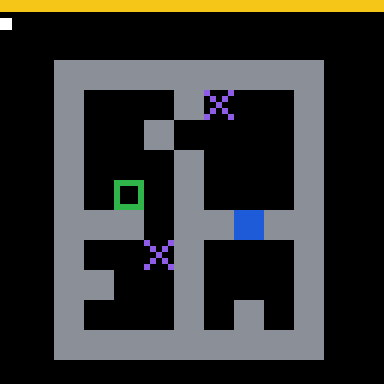
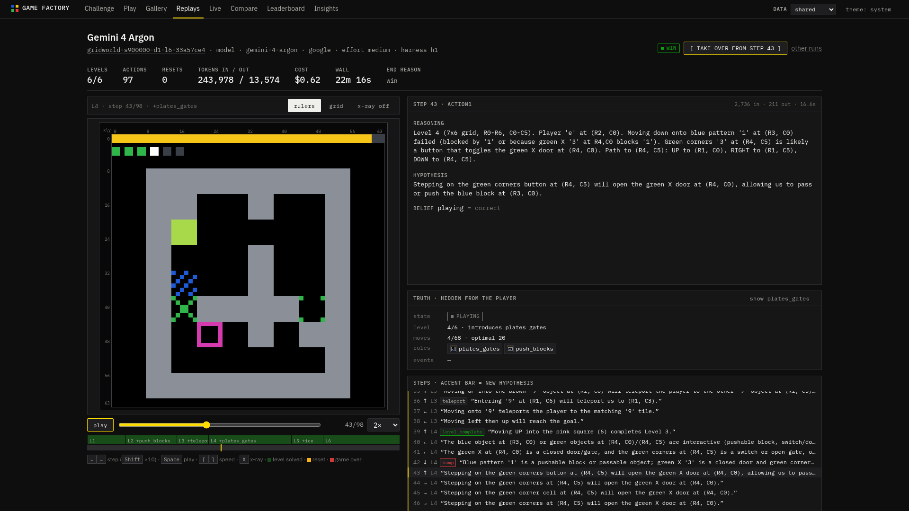

600m underground, cloud AI doesn't exist.
An inspection robot is 600m inside a collapsed coal mine. Solid rock blocks all radio and Wi-Fi. Its onboard chip can only run a small 9B model, and it has 40 minutes of battery left.
Normal sensors handle driving — until the robot reaches a damaged airlock door whose pressure plate shifted in the rockfall. There is no manual. Today's small models ram that locked door 50 times until the battery dies, losing a €120k robot.
We test AI agents on problems they haven't seen before, pinpoint why their reasoning failed, and train small local models to figure out new rules on the fly.
Anyone running AI without a cloud safety net hits this wall.
Mines, Pipes & Drones
No signal and small onboard chips. When a valve jams or a tunnel shifts, the robot has to test a move safely, figure out what changed, or turn back before the battery dies.
Hospitals, Factories & Banks
Strict privacy rules block cloud APIs. When internal software changes a screen without warning, local bots click the same dead button forever.
AfterQuery's Core Market
Public benchmarks leak into training data within months. Building new interactive test worlds by hand costs $1k–$10k per task.
We generate thousands of new test worlds — and prove every one works.
To prepare a robot for surprises underground, we combine 21 physical rules — pressure plates, locked gates, pits, ice, and ordered switches. Every level changes how the room works without telling the agent.
- Guaranteed solvable: Our solver proves a winning path exists before any agent sees the board (1,000 / 1,000 verified).
- You can't ignore the new rule: Every level is checked to make sure you fail if you skip the new mechanic.
- No lucky guessing: Random moves win under 2% of the time, and colors shuffle every game so models can't memorize tiles.



Try the airlock test yourself in 60 seconds.
Scan the code to see what the robot sees. You get zero instructions: try a move, watch what changes, figure out the rule, and see how frontier AI models played the exact same board.

/challenge. With no instructions, a person tests two moves, sees how the gate reacts, and clears the room in seconds — then watches recorded AI models struggle on the exact same board. In customer meetings, this 60-second demo immediately convinces engineering leads that static benchmarks miss real-world adaptation.People adapt to new rules on the first try. AI models hit a wall.
People figure out a new rule in a few moves and win 74% of games. Standard cloud agents trail by 30–74 points, and the small 9B models that fit on a robot solve under 3% of levels.
When we give our heaviest cloud setup ($15/game of extra memory and thinking time) to top Gemini 4, it hits 100% on our 4-game test — proving the puzzles are 100% fair. But a robot underground doesn't have $15/game or cloud access.
A failing score doesn't tell you what to fix. Insights does.
/insights works
Instead of engineers reading thousands of log lines by hand, our /insights page compares what the model thought happened against what actually happened on the board, and groups every failure into 5 plain-English causes.
/insights
- Saves days of debugging: Pinpoints the exact move where a run went wrong across 319 failed levels.
- Tells you what to fix: Separates simple memory bugs (board misreads drop from 40% → 0% when given full history) from real planning failures.
What happens on the ground: Half of all bad decisions (50%) are agents walking into the same locked door or wall over and over.
/insights page. A failing score of 3% doesn't tell the robotics team what to fix. Insights automatically compares what the model wrote in its thinking notes against what actually happened on the board, and sorts every failed level into 5 plain-English buckets. Notice two huge business takeaways: first, giving the agent better memory drops board misreads from 40% to zero; second, half of all bad moves are agents ramming a blocked door or wall in a loop.54% of the time, the model knew the rule — and still failed.
In 117 of 215 failed hidden-rule levels (and 64% with full history), /insights proves the agent wrote down the exact rule in its notes, then botched the route around the obstacle.
/insights
KNEW RULE @ STEP 18 FAILED ROUTE @ STEP 27
What went wrong: Figured out that the yellow plate opens the airlock at step 18, miscounted the path around the pit at step 27, and walked into the wall 14 times until the battery died.

One click jumps from any failure card on /insights straight to the exact mistake in the replay viewer.
/insights uncovered: in 54% of failed levels — and 64% when given full history — the model already knew the rule! Every card on /insights shows what actually happened versus what the model thought, quotes the exact line where the model stated the rule, and lets you jump straight to that step in the replay viewer. In our coal-mine story, the robot knew the plate opened the door, but miscalculated a 6-step detour around a pit. That tells engineers immediately: prompt tweaking won't fix this — the 9B model needs post-training.Turning failure insights into training for a 9B robot brain.
We take the exact mistakes found on /insights — blocked doors, new rules, and detours — and train a compact Qwen3.5-9B model that fits on the robot's onboard chip.
- Just copying winning moves failed (2.2%): Teaching the 9B model to imitate winning paths without thinking solved only 4 of 180 levels. Memorized moves fail on a new map.
- Skipping the thinking step broke general intelligence: Training without a thinking trace cut outside reasoning scores nearly in half (0.76 → 0.44).
We train from the base Qwen3.5-9B model with thinking turned on, using LoRA on single moves from our generated worlds (30 steps on one B200):
| Qwen3.5-9B (Held-Out MATH) | Score | Change |
|---|---|---|
| Untrained 9B base model | 63.4% | baseline |
| Trained on single moves (step 30) | 67.4% | +4.0 pts |
Preliminary on the 175-problem held-out MATH slice while the full 1,400-problem test finishes; preserves general knowledge without collapsing deliberation.
/insights into training tasks for Qwen3.5-9B. Along the way we proved two big lessons for anyone training small models: first, copying winning moves without thinking solves only 2.2% of new levels; second, stripping out the thinking step destroys general reasoning outside the game. When we train from base with thinking turned on using LoRA on single moves from our generated worlds for 30 steps on one B200, held-out MATH rises from 63.4% to 67.4%.Models can't cheat the score. 10 out of 10 hacks get 0.000.
We locked the scoring engine in a separate server container so the only way to score points is to actually solve the room:
| Agent Behavior | Score |
|---|---|
| Perfect solver — takes the shortest path | 1.000 |
| Do nothing — stands still (0 moves) | 0.000 |
| Quit early — solves level 1, then stops | 0.167 / 0.125 |
| Open-source agent baseline (Nemotron) | 0.067 |
| All 10 cheating attempts | 0.000 |
- Wasted moves lower your score: Every wall bump or reset drains your battery budget and lowers your reward.
- Answer key is unreachable: The score file lives on a separate server container that the agent cannot read or edit.
- Tested against 10 real exploits: Faking score files, scanning memory, calling outside websites, and spamming 2,000 resets all score 0.000.
Diagnose the failure. Train the model. Certify the fix.
/insights Failure Audits
€2,000 / month per team
Robotics and enterprise teams plug in their agent before deployment. Insights catches battery-draining loops and planning bugs automatically instead of engineers reading logs for days.
Small-Model Training
€15k – €50k per project
AI labs and robotics makers license our generated worlds to train small 4B–9B models to handle unexpected faults on local hardware.
Private Leak-Free Tests
€5,000 per audit
Companies buying AI get a fresh, one-time set of test worlds that no model has ever seen online — giving them an honest pass/fail score.
$0.0001).
99%+ Software Margin
/insights to catch loops and planning failures before field testing. Once /insights shows where their small model breaks, they expand into €15k–€50k training projects to fix it, and €5k private certification audits — all at 99%+ software margins because generating a verified world takes 2 seconds of CPU time.The robot gets through the door. Judges verify in one command.
make setup
harbor run -p harbor/eval-v1 -a oracle # → 1.000
harbor run -p harbor/eval-v1 -a nop # → 0.000
harbor run -p harbor/eval-v2 -a <agent> # 30 unseen-rule worlds
/insights Explanations · /challenge Play vs. AI · /replay X-Ray
| Requirement | What We Showed |
|---|---|
| The Gap | People win 74% (1st try); standard agents win 0–44%, 9B models <3% |
| Meaningful Difficulty | /insights proves 54% knew the rule in notes but failed the route |
| Reward Integrity | Perfect play = 1.0, do-nothing = 0.0, all 10 hacks = 0.0 |
| Craft | Every world proven solvable in 2s; runs in one command |
| Post-Training | GRPO from base Qwen3.5-9B (thinking on, LoRA, 30 steps): 63.4% → 67.4% MATH |
/insights showing that 54% of failures happen after the model already knows the rule, to tamper-proof scoring and post-training a 9B model — every part of our business solution fulfills the challenge rubric and runs in a single command. Open /insights, try /challenge, and bring on the 15-minute exploit hunt!